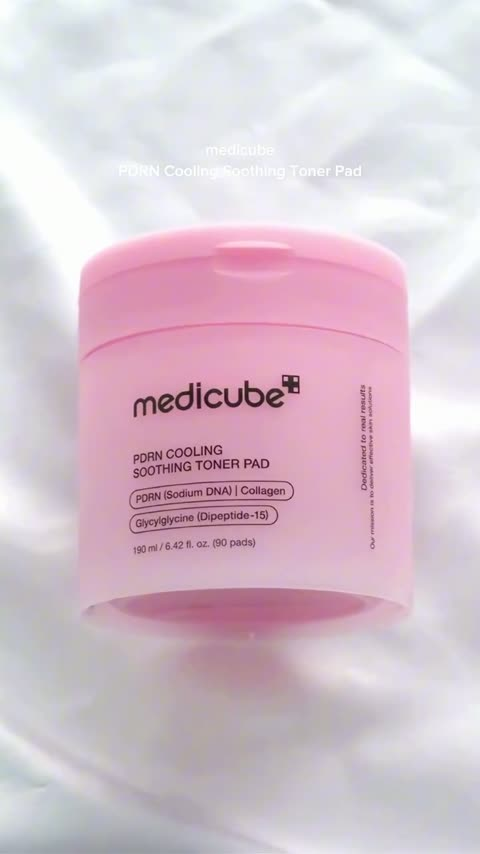

A형10/27 추가 조사@medicube_global_official
메디큐브 쿨링 패드 · 제품 동작 접사
상단 고정 문구 · 화면 원문
“상단 고정 문구 없음 · 제형·사용 장면의 중앙 자막”
공유 636저장 813좋아요 —댓글 —
공유+저장 1,449측정일 10/27
공유+저장 환산 불가
10/27 11:46 실측. 10/19 게시. 셀럽 2차광고가 아닌 제품 광고로, 제품 촬영 방식만 참고.
컷·자막·선정 판단 펼치기
장면 순서
0초 내용물·패드 동작 → 약2초 용기 정면 → 개봉·손등 사용 → 제품 마무리
판단 근거
제형·제품 식별·사용이 각각 독립된 컷으로 읽힘. 컷별 성과 인과관계는 미확인.
김가연 적용
우리 제품 정면 라벨과 개봉 장면의 구도 참고.
AI 분석상 나레이션 없음 · AI 분석상 교차형 아님
음성 판정 근거 펼치기
전 구간에 걸쳐 화자의 목소리나 나레이션 없이 경쾌한 재즈 스타일의 배경 음악(BGM)만 재생됩니다.
확인 수준: 전체 영상·원음의 AI 분석 · 사람의 직접 청취 아님
구간은 모델이 추정한 근삿값으로, 정확한 편집 타임코드가 아니다.
- 0–13.433초 · 음성 유형 미분류